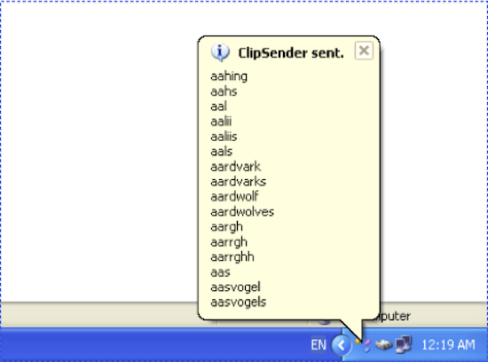

Clipboard Sender
This program demonstrated the technologies of system clipboard, keyboard hook, and HTTP communication on Windows system. The demo program is a desktop application that captures the contents of system clipboard and sends to a given URL via HTTP POST method. Extra information like user name or email address may be sent along with clipboard contents.
System Clipboard
On Windows, the contents of system clipboard are organized into different “types”. For example, text in clipboard is usually labeled with a type of “CF_TEXT” while picture is labeled with “CF_BITMAP”. There is a set of Win32 APIs provided to set and get the contents of system clipboard.
HTTP Communication
HTTP is a protocol used in communication between web browser and web server. HTTP POST method sends data from client to server in message body rather than request URL like that in HTTP GET method. On Windows, Win32 APIs of WinHTTP provide all functions of HTTP client. With these APIs, we can send data in the message body of HTTP POST. Meanwhile, customized message headers can be assigned to carry extra information along with the message data.
In general, web server tends to handle text with UTF-8 coding. The contents of system clipboard may be converted to UTF-8 code from Unicode before sending.
Keyboard Hook
Keyboard shortcut like CTRL+S is a convenient way to control when we should send the contents of system clipboard. In practice, sending occurred often in a context of any applications that are running. We need to capture keyboard shortcut even when our application window is not the focus. This task can be done with a global keyboard hook that implemented in a separate dynamic link library (DLL). The hook sends a message to the application’s window once the given shortcut CTRL+S is captured.
Demo Program
We developed a desktop application to control the workflow and provide a graphic user interface (GUI) for possible configurations and notifications of running status. A system tray icon is a good choice for this application. A configuration window can be displayed from the tray icon to setup target URL, user name, email address, and any other information that may be sent along with the clipboard contents. In addition, when clipboard contents is sent to server or failed to send for some reasons, the tray icon may raise a notification with a bubble tip window shown as below screen shot:
Possible Improvements
Current demo program was developed with below constraints:
- Compiled and debugged with Visual C++ 2010 Express on Windows XP. No testing on other platforms.
- Coding with C/C++, STL, Win32 API. No MFC and third-party libraries if possible.
- Only handle contents in system clipboard with type “CF_TEXT”.
- Sending clipboard contents to a given URL via HTTP POST. Possible response from HTTP server is ignored.
- No configuration is implemented. Target URL is hard coded to local address (http://127.0.0.1:80).
Accordingly, the possible improvements of the program include:
- Configuration GUI of the software.
- Extra information sending along with clipboard contents.
- Debug and testing on other Windows versions like Win7 and Win8.
- Support picture in clipboard.
- Refine design and implementation with object-oriented concept and design patterns to improve the maintainability and extensibility.
- Transplant to other platforms like Mac OS X (and Linux).